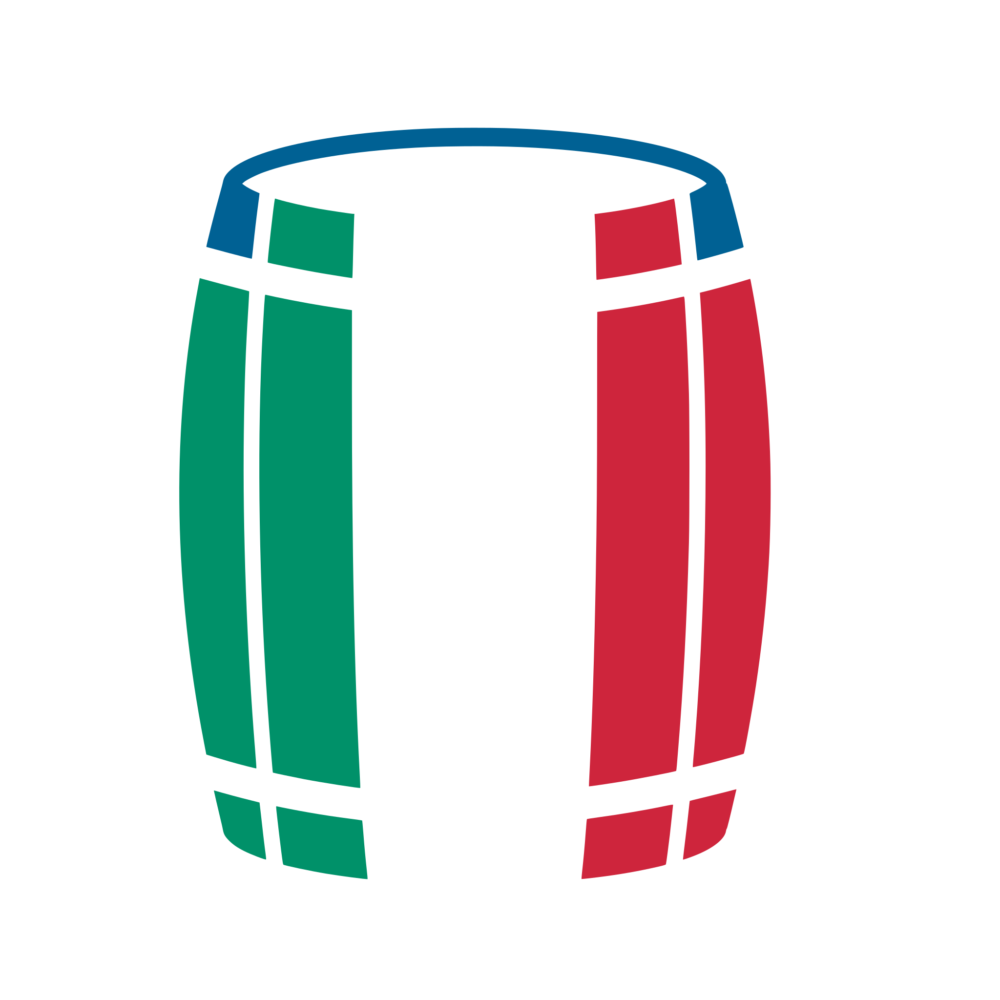
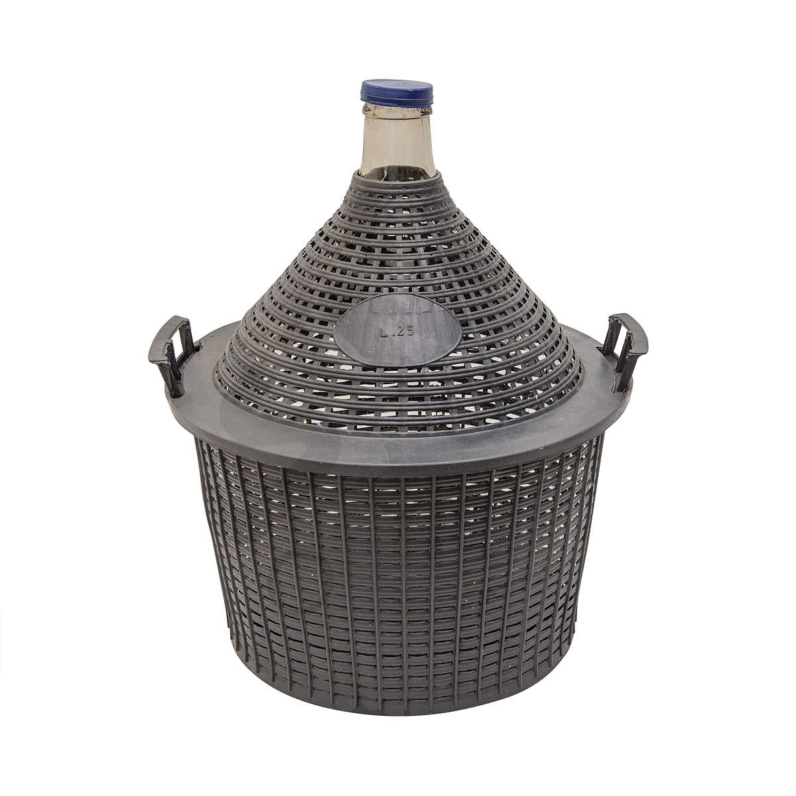
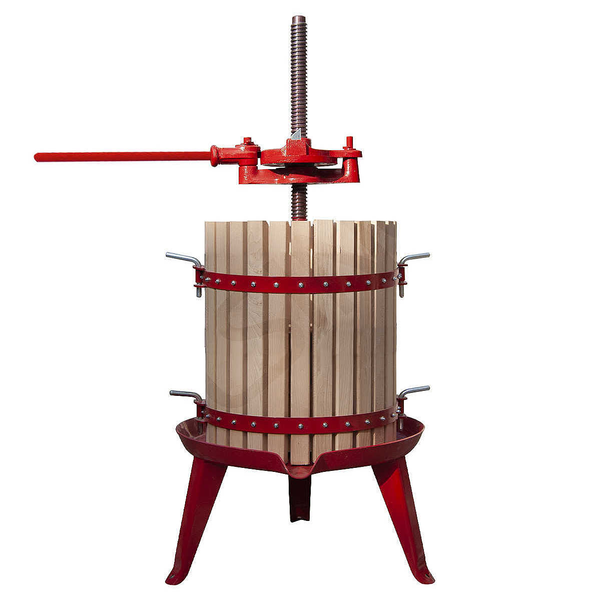
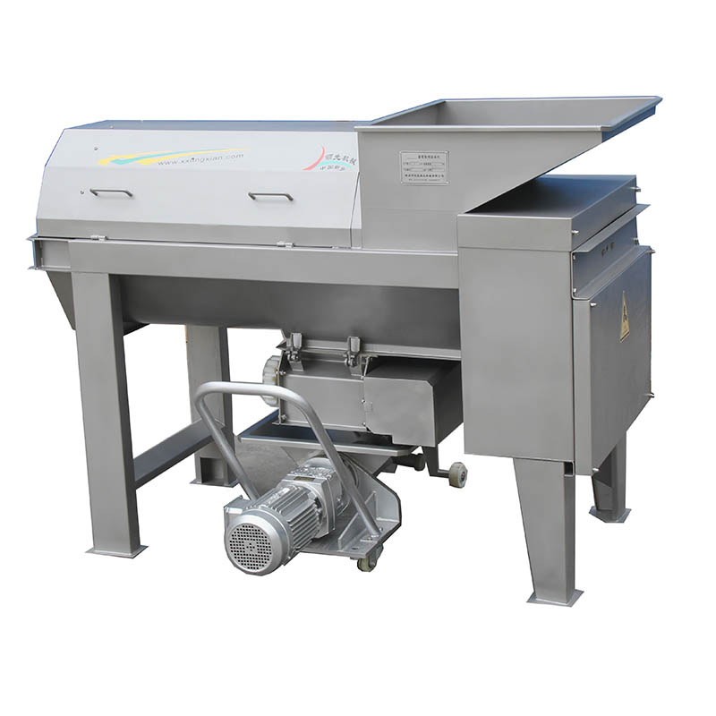
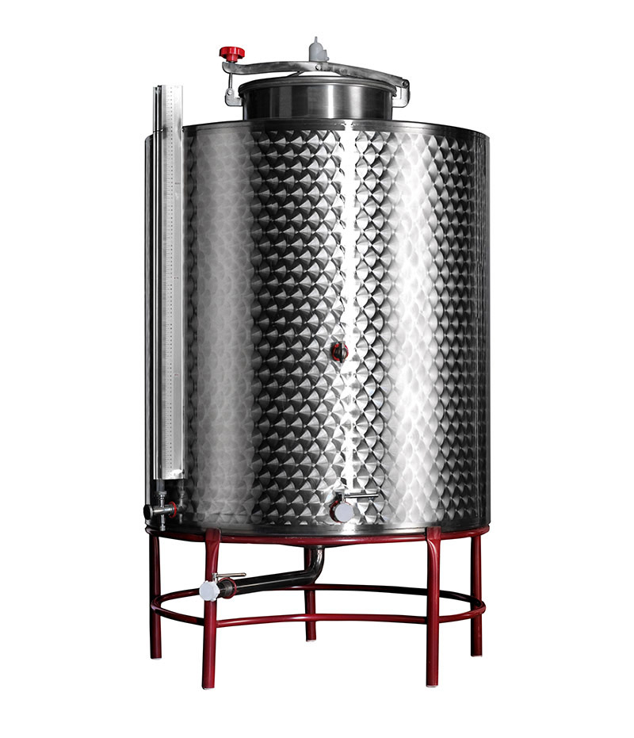

<main>
    <section>

            <div class="site-con padding-t-3">
                <div class="heading">
            
                    <div class="heading__title">
                        <h1 class="capitalize font-4">wine grape <span class="block">equipment</span></h1>
                        
                    </div>

                    <h2 class="capitalize font-1">{{ page.slogan }}</h2>
                    <p class="max-width-60">
                    We also supply winemaking equipment to make your life easier. Including containers and blends to make your wine cleaner.
                    Below are some of the products we sell. <br><br>
                    If you cannot see an item you would like to buy, please, <a href="https://gg1982.github.io/vina-da-uva/#contact">contact us</a> with the details.
                    <p>                     
                </div>

                <div class="grape__img back"></div>
            </div>

                <div class="grid-altcol-2 gap-2 grid-items-center width-m padding-block-3 mx-auto">
    
                <div class="grid-item mx-auto flex-col gap-1 max-width-30">
                    <h4 class="grid-item capitalize font-0 text-center">damigiana</h4>
                    <p class="grid-alt-col__body mx-auto">Damigianas come in sizes from 5L up to 54L, making it a great container to serve your homemade wine to friends and
                    family. Can also serve as a beautufil decoration.
                    </p>
                </div>
                
    
                <div class="grid-item mx-auto flex-col gap-1 max-width-30">
                    <h4 class="capitalize font-0 text-center">Torchio/Press</h4>
                    <p class="grid-alt-col__body mx-auto">A winepress is used to extract juice from crushed grapes during winemaking. The pressure must be controlled, especially with wine grapes, to avoid crushing the seeds and releasing a lot of undesirable tannins into the wine.</p>
                </div>
                
    
                <div class="grid-item mx-auto flex-col gap-1 max-width-30">
                    <h4 class="grid-item capitalize font-0 text-center">de-stalker/crusher (manual or electric</h4>
                    <p class="grid-alt-col__body mx-auto">A crusher is an ideal product for anyone involved in the wine industry. An electic crusher is perfect for optimising
                    work time in the winery and ensuring an smooth production.</p>
                </div>
                
    
    
    
                <div class="grid-item mx-auto flex-col gap-1 max-width-30">
                    <h4 class="grid-item capitalize font-0 text-center">Steel container</h4>
                    <p class="grid-alt-col__body mx-auto">Stainless steel containers are a popular choice amongst wine producers. It is straightforward to maintain and clean, lasts a long time and is easy to keep at the correct temperature.</p>
                </div>
                
            </div>

    </section>
</main>
